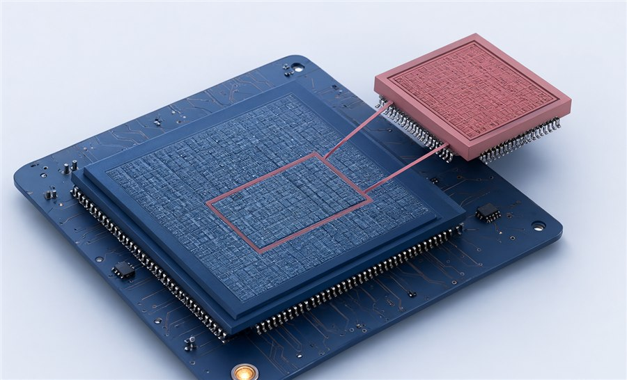
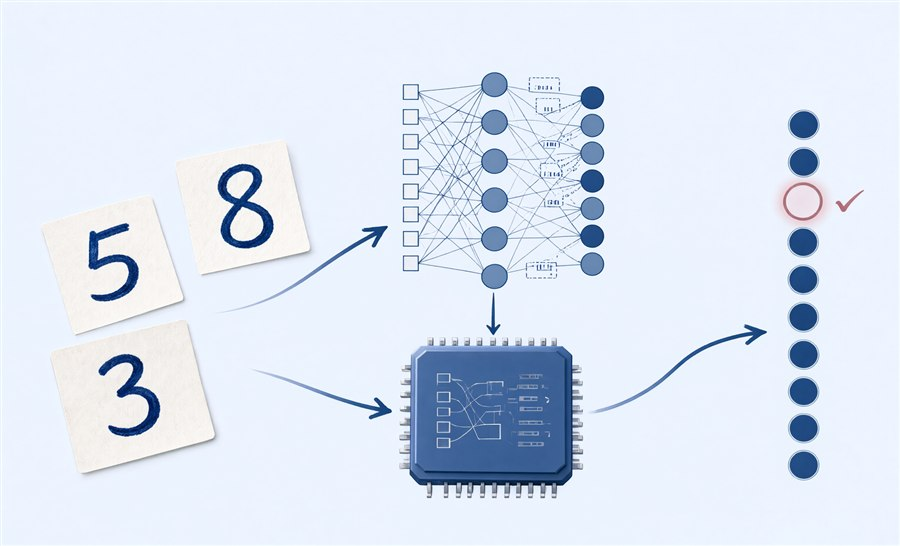

Hi there Welcome to my Homepage!
你好，我是倪正航，一名在校学生，也是一名持续探索中的创造者。我相信学习最好的方式是动手做，所以这个主页本身就是一次实验。
我对人工智能与电子信息都抱有浓厚兴趣，喜欢把抽象的概念变成具体可用的工具。最近的主场是一块 RK3568 边缘板——我在上面做一个隐私保护的「边缘黑匣子」EdgeBlackBox：把多模态传感信号在设备端采集、触发与检索，数据不出板。
目前我正在系统性地打磨自己的工程能力，同时保持对未知领域的好奇心。如果你也对创造感兴趣，欢迎一起聊聊，或来信讨论项目合作与各种机会。
Research Interests
- Edge AI
- Embedded AI
- FPGA
- Embedded Linux
- Multimodal Sensing
- Privacy
News
- To be updated.
Experience
-
2024.09 – Present
Undergraduate Student · 电子信息工程专业
电子工程学院 · School of Electronic Engineering · 2024 级
Publications
To be updated.
To be updated.
Projects
EdgeBlackBox · 边缘黑匣子
基于 RK3568 的隐私保护型多模态边缘事件检索黑匣子。核心黑匣子循环：板载信号 / CAN FD 振动 → 环形缓冲 → 低成本事件触发 → JSONL 事件索引 → 本地检索回看，数据全程不出板。
Flagship Project · Edge AI进行中 GitHub
基于 openFPGA 的自定义 FPGA
物理 FPGA 承载软 FPGA Fabric，软 FPGA 再承载用户流水灯逻辑，形成两级映射的分层架构。
FPGA · Prototype GitHub
FPGA 手写数字识别加速器
在安路 EG4S20 / HX4S20 上实现 INT4 量化 MLP 推理核心（48×48 → 32 → 10），MNIST 实测约 94.87%；RTL 与黄金模型一致，板级 200/200 帧验证通过。
FPGA · Edge Inference板级验证 GitHubBlog
To be updated.
Talks
To be updated.
Reports
To be updated.
Awards
-
全国大学生数学竞赛 · 省级一等奖
-
全国大学生嵌入式芯片设计竞赛 · 二等奖
Services
To be updated.